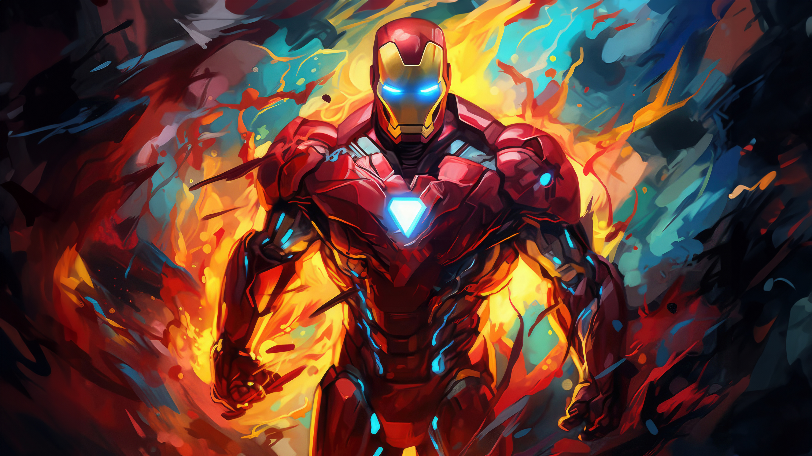
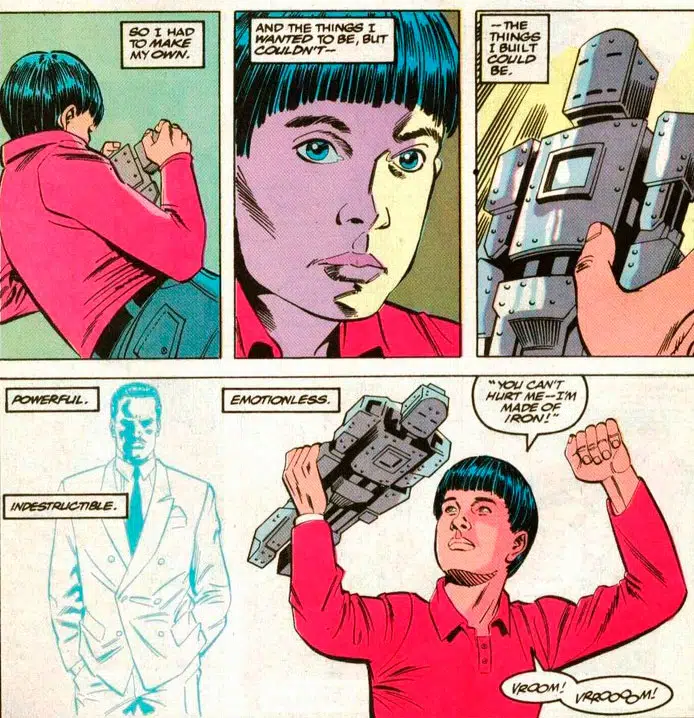
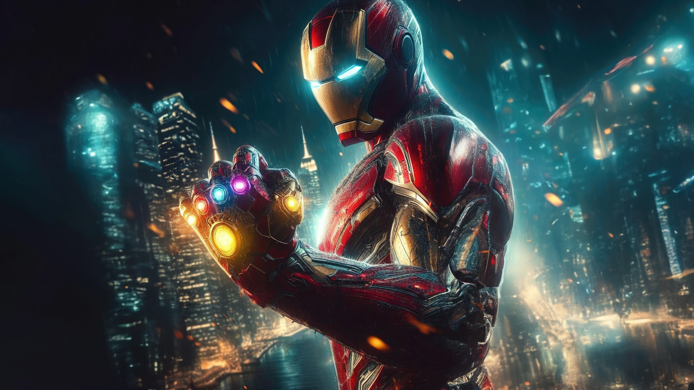

IRON MAN
 March 14, 2024Homem de Ferro – Origem e história do herói no Universo Marvel 🤖
Homem de Ferro é um personagem de quadrinhos, criado por Stan Lee e Larry Lieber. Além da dupla de roteiristas, os desenhistas Jack Kirby e Don Heck, também fizeram parte do desenvolvimento.
O personagem surgiu em 1963, como resposta a um desafio pessoal de Stan Lee. O roteirista queria desenvolver um personagem que pudesse ser odiado, para, então, ser amado pelo público.
O Homem de Ferro fez sua estreia na revista Tales of Suspense #39, da Marvel Comics.
Biografia do Homem de Ferro 🔴
O alter-ego do Homem de Ferro é o bilionário Tony Stark. Mas, antes de ser bilionário, Tony era apenas o filho único da família Stark. Com uma relação ruim com seu pai – Howard Stark -, ele acabou sendo enviado para um internato aos seis anos de idade. Em meio a estudantes do ensino médio, Tony acabou se destacando como gênio prodígio.
Quando tinha 15 anos, Tony ingressou no programa de graduação do MIT, onde se tornou mestre em física e engenharia elétrica. Enquanto estudava, também conheceu outro jovem gênio: Bruce Banner. Ao longo da vida, Tony e Bruce desenvolveram uma grande rivalidade científica.
Aos 20 anos, Tony acabou se voltando para uma vida ociosa e nômade. Depois de se envolver com mulheres ligadas aos rivais de seu pai, Tony foi proibido de se relacionar e decidiu passar a curtir a vida viajando o mundo. Entretanto, aos 21 anos, precisou voltar para casa, depois que seus pais foram mortos e ele foi apontado como principal herdeiro das Indústrias Stark.
Poderes e habilidades do Homem de Ferro 🦾🤖

O Homem de Ferro, alter ego de Tony Stark, é um dos heróis mais emblemáticos e tecnologicamente avançados do universo Marvel.
Equipado com uma armadura de alta tecnologia, Stark é capaz de voar pelos céus e enfrentar os mais formidáveis adversários com uma variedade de armas poderosas.
A armadura do Homem de Ferro oferece uma gama impressionante de recursos, incluindo repulsores de energia, mísseis, lasers e um sistema de voo altamente sofisticado.
Além disso, ele pode adaptar sua armadura para enfrentar ameaças específicas, tornando-o extremamente versátil em combate.
Além de suas habilidades de combate, Tony Stark é um gênio inventor e empresário de sucesso.
Ele possui uma mente brilhante e é capaz de criar tecnologias revolucionárias que beneficiam a humanidade como um todo.
No entanto, o maior superpoder de Stark pode ser sua inteligência e sua capacidade de pensar rápido em situações de crise.
Ele é conhecido por sua astúcia e habilidade de improvisação, o que o torna um adversário formidável para qualquer vilão.
Apesar de sua armadura de ferro e sua riqueza, Stark é um personagem complexo com suas próprias falhas e dilemas morais.
Ele lida com questões de responsabilidade e o uso ético de sua tecnologia, e sua jornada como herói é marcada por momentos de auto-reflexão e redenção.
No final, o Homem de Ferro representa não apenas a vanguarda da tecnologia no universo Marvel, mas também a força da determinação humana e a capacidade de superar desafios aparentemente insuperáveis. Ele continua a ser um dos heróis mais icônicos e inspiradores de todos os tempos.